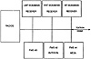
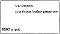
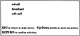
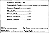
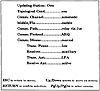
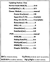
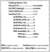

by Abraham Kandel
CRC Press, CRC Press LLC
ISBN: 084934297x Pub Date: 11/01/91
|
|
Fuzzy Expert Systems
by Abraham Kandel CRC Press, CRC Press LLC ISBN: 084934297x Pub Date: 11/01/91 |
| Previous | Table of Contents | Next |
The MMI is a self-prompted, human-friendly interface, which leads the user through the various steps of operating COMEX. Since COMEX requires information concerning various aspects of the communication network, net members, available communication equipment, traffic type, frequency assignments, topological conditions, system configuration, etc., the MMI interrogates the operator with respect to these and additional aspects. The MMI classifies and stores this information in its data base and transfers pertinent parameters to the CONTROLLER expert system.
In addition to the information loaded by the operator, the MMI accepts relevant information from external sensors, such as frequency management systems,1-7 and from resident utility programs running on the same processor. Such utility programs include Fresnel zone propagation, IONCAP, MINIMUF, satellite visibility, and BER performance evaluation programs.
The following examples (see Figures 3 through 6) present a sample of the numerous screens presented to the user by the MMI. Through these interactive, self-prompted screens the communication station operator loads the various data that are relevant to the operation of COMEX or instruct COMEX to perform the communication.

Figure 2 The external sensors attachable to COMEX.

Figure 3 Starting screen of COMEX.

Figure 4 Screen following the selection of transmit option.

Figure 5 Screen following selection of parameter change option. In this case the user's own parameters are being updated. The sea option was selected out of four possibilities, the rest of parameters still being undefined.

Figure 6 Full first screen of parameters for user Own.
In Figure 7 the operator has selected a Manual FMS operation mode. Thus, the communication channels recommended by the frequency management (FMS) must have better communication conditions than the conditions set in Figure 7. These parameters are being measured by external sensors (see Figure 8) and updated periodically.
The CONTROLLER is the intelligent subsystem which controls the operation of the various other COMEX components. It accepts action commands from the operator via the MMI. Such commands include “Call Joe”; “Call 4231”; “Broadcast”; “Call Group 12”; “Monitor Channels 1, 16, international emergency channels (EMERG)”; etc. The decision as to how best establish the desired communication is reached by the expert system, with the execution by the EXECUTE module.

Figure 7 Second screen of parameters for user Own.
The CONTROLLER also continuously controls the statistical data base. This data base collects and updates station statistics concerning the success/failure of communication attempts, channel qualities, correlation of predicted and achieved performance, channel parameters analysis and scaling, channel model and time constants, connectivity matrices, etc. This data base is used by the CONTROLLER subsystem to reach the solution for the communication problem. The various statistics accumulated in the data base are also used to update the “certainty factors/membership grades” of the fuzzy parameters used by the expert system for uncertainty management.
COMEX contains three knowledge bases (KBs), on which the expert system operates in solving the communication problem. KB1 is used in the CHANNEL TYPE SELECTION — where according to the desired communication task and constraints of the available equipment, range, available channels, etc. — the expert system selects and recommends the use of telephone, MF, HF, VHF, UHF, or satellite communication channels. The CONTROLLER then utilizes KB2 in the EQUIPMENT and PATH SELECTION. Thus, according to the size and type of message to be transferred (the range, the antenna coverages, etc.), the expert system selects and recommends the specific antenna, transmitter, receiver(s), modem, and terminal to be used. It also selects and recommends the path and the relay station (if needed) to be used.
Finally, the expert system employs KB3 to perform the OPERATING PARAMETERS SELECTION by selecting the modem operating parameters (modulation, data rate, code, interleaving depth, preamble length, IBD, OBD, etc.); the radio operating parameters (power, bandwidth, diversity, etc.); operating frequencies and communication protocol (FEC, ARQ, packet size, etc.). The CONTROLLER has now all the necessary knowledge to perform the communication in an “optimal” and “expert” manner, just as an expert operator would. This described cycle of decisions based on the three separate knowledge bases may be performed a number of times before the CONTROLLER reaches the optimal solution and decides to operate the EXECUTE module (if in AUTOMATIC operating mode) or notify the human operator of its conclusions (if in MANUAL operating mode).

Figure 8 Equipment updating screen for user Own. The external HF frequency management sensors are in the process of being defined, the first one being MESA with the other still undefined.
| Previous | Table of Contents | Next |
){kind=link}
){kind=link}
){kind=link}
){kind=link}
){kind=link}
){kind=link}
){kind=link}